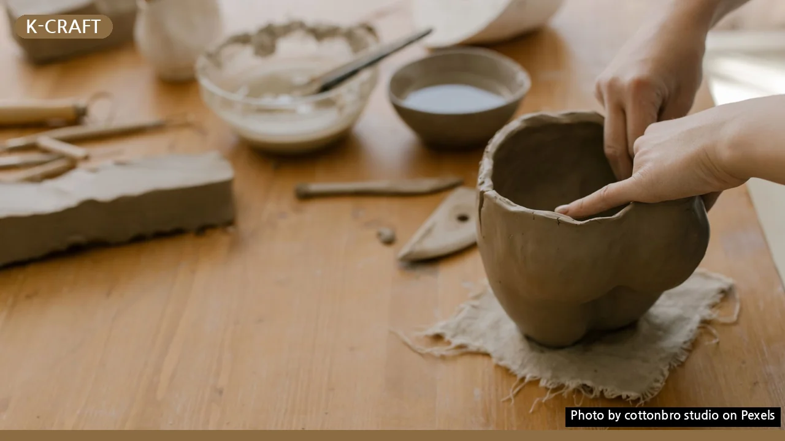
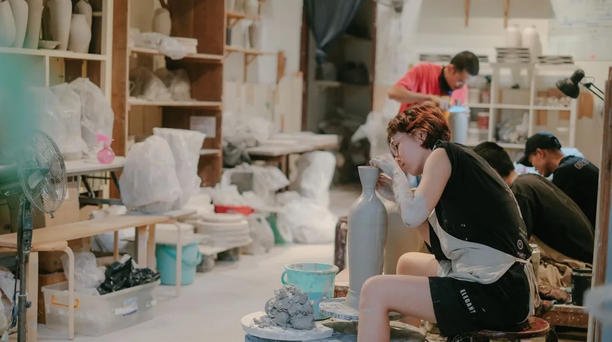

내 손으로 만드는 달항아리? 초보도 쉽게 시작하는 인테리어 체험
사진: cottonbro studio / Pexels (무료 이미지, 출처 표기)
내 손으로 만드는 달항아리, 왜 특별할까요?

달항아리는 조선 백자의 미학을 대표하는 예술품으로, 그 은은한 아름다움과 고유한 곡선은 어떤 공간에 두어도 특별한 분위기를 자아냅니다. 최근에는 이러한 달항아리를 직접 만들어보는 체험이 인기를 끌고 있습니다. 단순한 인테리어 소품을 넘어, 나만의 정성과 스토리를 담은 작품을 만들고 싶은 분들을 위해 달항아리 체험의 모든 것을 안내해 드립니다.
흙을 만지고 형태를 빚는 과정은 일상에서 벗어나 집중과 몰입의 시간을 선사하며, 완성된 작품은 공간에 깊이를 더하는 오브제가 됩니다. 초보자도 쉽게 도전할 수 있도록 다양한 체험 방식이 존재하니, 나에게 맞는 방법을 찾아보세요.
달항아리 체험, 나에게 맞는 유형 고르기: 공방 vs. DIY 키트
달항아리 만들기 체험은 크게 도예 공방에서 전문가의 지도를 받는 방식과 집에서 간편하게 즐기는 DIY 키트 방식 두 가지로 나눌 수 있습니다. 각 방식의 장단점을 비교하여 자신에게 적합한 유형을 선택하는 데 도움을 드리겠습니다.
공방 체험은 도자기가 완성되는 전 과정을 경험하며 높은 퀄리티의 작품을 얻을 수 있지만, 시간과 비용 투자가 필요합니다. 반면 DIY 키트는 접근성이 좋고 가볍게 시작할 수 있다는 장점이 있습니다.
공방에서 달항아리 만들기: 과정과 준비물
도예 공방에서 달항아리를 만드는 과정은 대체로 비슷하지만, 공방마다 세부적인 방식이나 프로그램 구성이 다를 수 있습니다. 일반적인 과정을 중심으로 설명해 드립니다. 2026년 10월 기준으로, 공방 예약은 대부분 온라인이나 전화로 이루어지며, 주말이나 특정 시간대는 미리 마감될 수 있으니 최소 1~2주 전 예약하는 것이 좋습니다.
- 1단계: 예약 및 방문
원하는 공방을 선택하여 체험 일정을 예약합니다. 체험 당일 편안한 복장으로 방문하는 것이 좋습니다. 흙 작업이므로 앞치마는 공방에서 제공하는 경우가 많습니다. - 2단계: 흙 선택 및 형태 잡기
공방 강사의 안내에 따라 흙(점토)을 고르고, 물레나 손으로 직접 달항아리의 형태를 만듭니다. '코일링(Coiling)' 기법을 주로 사용해 흙을 층층이 쌓아 올리며 달항아리 특유의 둥근 형태를 빚어냅니다. - 3단계: 건조 및 다듬기
성형이 끝나면 작품을 건조대에 올려두고 어느 정도 마르기를 기다립니다. 이 과정에서 표면을 매끄럽게 다듬거나 조각칼로 문양을 넣을 수 있습니다. - 4단계: 초벌구이 및 유약 처리
작품이 완전히 마르면 공방에서 초벌구이를 진행합니다. 초벌구이 후에는 원하는 색상의 유약을 선택하여 바릅니다. 유약의 종류에 따라 완성 후 색감과 질감이 크게 달라지므로 신중하게 고릅니다. - 5단계: 재벌구이 및 완성
유약 처리된 작품은 다시 가마에서 재벌구이를 거치며 단단하고 아름다운 도자기로 완성됩니다. 재벌구이는 고온에서 진행되므로 며칠에서 몇 주까지 시간이 소요될 수 있습니다. 완성된 작품은 공방에서 직접 수령하거나 택배로 받을 수 있습니다.
공방 체험 시 추가 비용(유약 색상 변경, 택배비 등)이 발생할 수 있으므로, 예약 시 미리 확인하는 것이 좋습니다.
집에서 즐기는 달항아리 DIY 키트 활용법
집에서 간편하게 달항아리를 만들고 싶다면 DIY 키트가 좋은 대안이 됩니다. 대부분의 키트에는 달항아리를 만들 수 있는 에어드라이 점토, 성형 도구, 채색 도구, 그리고 설명서가 포함되어 있습니다.
키트가 도착하면 먼저 설명서를 자세히 읽어보고, 필요한 도구가 모두 있는지 확인합니다. 작업 공간에는 신문지나 비닐을 깔아 흙이 묻는 것을 방지하고, 물티슈 등을 준비해두면 편리합니다.
- 점토 준비 및 반죽
키트에 동봉된 점토를 적당량 떼어내어 충분히 반죽해줍니다. 반죽을 잘 해야 나중에 갈라지는 현상을 줄일 수 있습니다. - 형태 만들기
설명서나 온라인 튜토리얼을 참고하여 점토를 쌓아 올리거나 덩어리째 빚어 달항아리 형태를 잡습니다. 일반적인 도예용 흙보다 다루기 쉬우므로 부담 없이 시작할 수 있습니다. - 건조 및 다듬기
형태가 완성되면 그늘지고 통풍이 잘 되는 곳에서 완전히 건조시킵니다. 에어드라이 점토는 가마 없이 자연 건조만으로 굳습니다. 건조 중 갈라짐이 발생하면 물을 살짝 묻혀 다시 메꿔주고 다듬습니다. - 채색 및 마무리
작품이 완전히 마른 후에는 키트에 포함된 물감이나 아크릴 물감으로 원하는 색을 입힙니다. 마감제로 바니시(니스)를 칠해주면 오염 방지 및 광택 효과를 얻을 수 있습니다.
DIY 키트는 가마 소성이 없으므로 실제 도자기처럼 단단하지 않다는 점을 인지하고 작품을 다루는 것이 좋습니다.
달항아리 작품, 더 오래 아름답게 관리하는 팁
정성 들여 만든 달항아리 작품을 오래도록 감상하기 위해서는 올바른 관리법이 중요합니다.
- 청소 방법: 도예 공방에서 만든 유약 처리된 달항아리는 부드러운 천이나 솔로 먼지를 털어내고, 오염 시에는 물을 살짝 적신 천으로 닦아낼 수 있습니다. DIY 키트로 만든 에어드라이 점토 작품은 물에 약할 수 있으니 마른 천으로만 조심스럽게 닦아주세요.
- 보관 장소: 직사광선이 강하거나 습도가 높은 곳은 피하는 것이 좋습니다. 온습도 변화가 심한 곳은 작품의 변형이나 손상을 일으킬 수 있습니다. 안정적인 평평한 표면에 두어 넘어지지 않도록 주의합니다.
- 취급 주의: 달항아리는 도자기 특성상 충격에 약합니다. 떨어뜨리거나 부딪히지 않도록 조심하고, 이동 시에는 반드시 양손으로 받쳐 들어야 합니다.
정기적으로 먼지를 제거하고, 적절한 환경에서 보관하면 오랜 시간 동안 작품의 아름다움을 유지할 수 있습니다.
체험 전 꼭 알아둘 주의사항 및 현명한 선택 가이드
달항아리 체험을 시작하기 전에 몇 가지 사항을 미리 확인하면 더욱 만족스러운 경험을 할 수 있습니다.
- 예약 및 환불 규정 확인: 특히 공방 체험은 예약제로 운영되며, 취소 및 환불 규정이 까다로울 수 있습니다. 예약 전 반드시 관련 내용을 숙지하세요.
- 추가 비용 유무: 기본 체험비 외에 유약 추가, 배송비, 작품 보관료 등 추가 요금이 발생할 수 있으니 사전에 문의하여 총 비용을 파악합니다.
- 작품 수령 기간: 공방 체험의 경우 작품 완성 및 수령까지 최소 2주에서 한 달 이상 소요될 수 있습니다. 선물을 계획한다면 충분한 여유를 두고 체험하는 것이 좋습니다.
- 아이 동반 여부: 어린 자녀와 함께 체험하고 싶다면, 해당 공방이나 키트가 아동 체험이 가능한지, 연령 제한은 없는지 확인해야 합니다. 안전과 직결된 부분이므로 중요합니다.
- 후기 및 평점 참고: 다른 사람들의 체험 후기나 평점을 참고하여 만족도가 높은 곳을 선택하는 것도 좋은 방법입니다. 특히 초보자를 위한 상세한 지도가 잘 이루어지는 곳을 찾아보세요.
이러한 정보들을 미리 확인하고 자신에게 가장 적합한 달항아리 체험을 선택한다면, 성공적이고 즐거운 나만의 작품을 만들 수 있을 것입니다. 정확한 사항은 공식 홈페이지나 해당 기관에서 다시 확인하시길 권장합니다.
🔗 이 글도 함께 보면 좋아요: 공예 원데이클래스, 나에게 맞는 곳 3단계로 고르는 비법
관련 추천 상품
달항아리 키트, 도자기 공방 체험권 관련 인기 상품 보러가기
이 포스팅은 쿠팡 파트너스 활동의 일환으로, 이에 따른 일정액의 수수료를 제공받습니다.